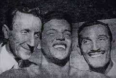
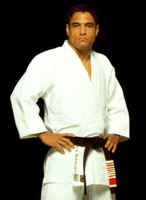

[엘리오 그레이시와 그레이시 주짓수]
현대 이종격투에서 그레이시 가문과 브라질리안 주짓수가 얼마나 비중을 차지하고 있는가는 새삼스럽게 강조할 필요가 없을 정도다. 우선 이종격투경기에 지대한 영향을 미친 UFC가 그레이시 주짓수의 류조(流祖)인 엘리오 그레이시의 장남, 호리온 그레이시에 의해 만들어진 대회다. 또한 UFC와 더불어 종합격투의 양대 산맥이자 메이저 이종격투대회라 할 수 있는 PRIDE FC가 힉슨 그레이시 vs 일본 프로레슬러의 격투 이벤트로 인해 탄생되었다. 그리고 아직까지 PRIDE FC는 일본인VS그레이시 일족의 대결구도를 유지하며 흥행을 꾀하고 있다. 게다가 전세계의 많은 이종격투대회의 출전 선수들을 보면 그레이시 가문과 직간접적으로 영향을 받은 경우가 대부분이라 이들이 없다면 대회가 성립되지 못할 정도다. 그뿐만이 아니라 전세계 모든 이종격투대회에 출전하는 선수 중 80퍼센트 이상은 브라질리안 주짓수를 필수적으로 연습하고 시합에 출전한다. 한마디로 그레이시 가문과 브라질리안 주짓수는 현대 이종격투의 대명사라 해도 과언이 아닌 것이다.
이 모든 것이 마에다 미츠요, 즉 콘데 코마가 브라질의 그레이시 가문에게 주짓수를 가르치면서 시작되었다. 그레이시 가문의 선조는 죠지 그레이시라는 스코틀랜드 사람이다. 그가 가난했던 고향을 등지고 멀고 먼 브라질 북부에 도착한 것은 1801년 이었다. 그 후 백년후인 1914년, 무자수행(武者修行)를 하며 세계를 떠돌던 마에다 미츠요가 죠지 그레이시의 손자인 가스타오 그레이시와 만난다. 이때 마에다 미츠요는 일본 이민자들의 브라질 정착촌을 건설하고 이민자의 복지를 위해 애쓰고 있었는데, 정치가이자 학자인 가스타오 그레이시가 마에다를 여러모로 도와주게 된다. 고마움을 느낀 마에다 미츠요는 그 답례로 주짓수를 가스타오의 장남 카를로스 그레이시에게 가르치게 된다. 5남중 장남인 카를로스는 엘리오 그레이시보다 11살 연상인데, 엘리오가 마에다 미츠요에게 직접 주짓수를 교수 받지는 않았다. 엘리오는 가족의 주치의조차 어떤 운동도 연습시키지 말라고 주의를 받을 정도로 신체적으로 왜소하고 연약했기 때문이다. 심지어 조금만 움직여도 기절할 정도였다고 한다.
1925년 카를로스에 의해 그레이시 주짓수 아카데미가 브라질의 수도 리오 데 자네이로에 설립되는데, 14살이던 엘리오는 허약한 몸 때문에 연습은 하지 않고 2년 동안 줄곧 매트에 앉아 형이 연습생을 가르치는 것을 보고만 있었다고 한다. 그래도 세계를 떠돌며 1000전 이상의 이종격투전을 펼쳤던 마에다 미츠요의 유술, 그 정수를 습득한 카를로스의 연습을 보면서 엘리오는 머리속으로 차근차근 주짓수의 이론과 이치를 채워나갔다.

(右.왼쪽부터 카를로스, 칼슨, 엘리오 그레이시)
일본의 옛 검술서에는 이처럼 무술에 대해 올바르게 관찰하는 것만으로도 큰 수련이 된다고 했는데, 이것이 확실히 엘리오에게 도움이 된 모양이다. 엘리오가 16살 때 한 학생이 수업을 받기 위해 왔으나 마침 카를로스가 자리를 없어서 그가 대신 학생에게 기술을 가르쳐 준다.
오늘날로 치면 연습 한번 안했던 사람이 주짓수 테크닉 강좌를 동영상으로만 보고 가르치는것과 비슷한데, 수련생은 크게 만족하며 앞으로는 엘리오와 연습하고 싶다고 카를로스에게 말한다. 엘리오 자신도 자신이 주짓수를 가르치는데 재능이 있음을 깨닫게 된다.
자신감이 생긴 엘리오는 이때부터 정식으로 주짓수 수련을 시작했다. 그는 선천적으로 약골인 탓에 유술에서 상당히 근력을 요하는 기술을 버리고, 유술의 근본적인 목적인 약한 사람이 강한 사람을 이기는 법, 즉 능유제강의 이론을 철저히 연구했다. 예를들어 강한 상대를 끌어안듯 기술을 거는 셀프 가드포지션 같은 기술등이 역시 체격이 마르고 허약한 그의 아들 호이스에게로 이어진다.
그는 비록 평생에 63킬로그램을 넘어서 본적이 없는 왜소한 체격이었지만, 자신이 변형시킨 주짓수의 실전성에 강한 자신감을 가지게 되었다. 그리고 마에다 미츠요의 기술뿐 아니라 정신도 계승된듯 엘리오는 자신보다 강한 육체를 소유한 타 무술인들과 도전자에 맞서 싸워 실전에서의 강함을 증명해 나간다.
17살 때 최초로 발레투도(Vale Tudo-무규칙) 시합에서 복싱선수 안토니오 포르투갈과 싸워 30초만에 암록으로 승리한다. 1932년에는 일본의 주짓수 달인 나미키와 싸워 무승부로 끝났지만 일본과 브라질 국내에 그의 이름을 알리게 된 계기가 되었다. 그 후 그는 왜소한 체격으로 거구의 도전자와 연속으로 싸워 이겨나가면서 전국적으로 명성을 얻게 된다. 20년간 그는 불패의 주짓수 챔피언으로 있었는데 같은 시기에 무자수행을 위해 브라질을 방문한 최영의 관장과는 대결이 이루어지지 않은듯하다. 최영의 관장은 브라질에서 카포에이라 달인과 실전대결을 했다고 하는데 엘리오 그레이시와 싸웠다면 세기의 대결이 되었을 터라 무척 아쉽다.
(최영의와 카포에이라 도전자와의 대결)
1951년 7월에는 기무라 마사히코와 유도인 두 명이 브라질에 초빙되었다. 기무라는 스무살에 전 일본 무제한급 유도 챔피언이 된 이래 13년간 단 한번도 패배한 적이 없다는 고수중의 고수다. 아직까지 일본유도계에는‘기무라 이전에 기무라 없고 그 이후에도 없다.’라는 말이 전설처럼 전해져 올 정도였으니 그야말로 일본 제일의 유도인이라 할 수 있다. 기무라와 함께 대학 챔피언이었던 야마구치 6단과 가토 5단이 동행했는데 엘리오는 그들에게 도전장을 내밀었다. 당시 엘리오는 42살 체중이 고작 62킬로에 불과할 뿐이었다. 반면 엘리오와 맞서 싸운 가토는 체중이 100킬로를 넘는 거구에 엘리오보다 훨씬 젊었다. 경기는 한쪽이 기절하거나 항복할때까지 싸우는 무규칙의 발레투도룰로 진행되었기 때문에, 가토는 유도에서의 한판인 메치기로 엘리오를 메쳐도 소용이 없었다. 10여분 동안 메치기를 시도했던 가토는 굳히기로 엘리오 그레이시를 상대하지만 오히려 엘리오의 조르기에 걸려들어 기절당하고 말았다. 가토는 기절했고 엘리오는 당시 마라카나 스타디움 12만 관중을 열광시키며 국가적인 영웅이 되었다.
(가토vs엘리오 그레이시)
엘리오는 가토에 이어 기무라에게도 시합을 제의했고 일본제일의 유도선수인 기무라 마사히코는 유도종가의 자존심 때문라도 그대로 떠날 수 없었다. 기무라는 100킬로그램이었고 엘리오보다 열살이 어렸다. 수만의 관중이 몰렸고 그레이시 추종자들은 기무라의 관을 운반해 왔다. 그날의 시합은 브라질 대통령과 부통령도 참관한 시합이었다. 기무라는 12분 동안 업어치기 다리후리기, 허리 후리기로 쓰러뜨린 후 누르기로 엘리오를 괴롭혔다. 그러나 엘리오는 절대로 굴복하지 않았고 기무라는 마침내 팔얽어 비틀기라는 관절기술을 엘리오의 팔에 걸었다. 절대로 궁지에 몰려도 탭(항복표시)하지 않는 전통은 이미 이때부터 엘리오에 의해 만들어진 듯 기무라의 기술에 의해 왼쪽 팔꿈치가 부러져도 그는 항복하지 않았고 결국 카를로스 그레이시가 타올을 던져 시합이 끝나고 말았다.
그리고 이때부터 기무라 마사히코가 엘리오 그레이시를 이긴 팔얽어 비틀기 기술을 기무라락(Lock)이라 호칭하게 되었다. 재미있는것은 이 시합후 그레이시 일족이 일본의 격투가를 상대로 불패의 기록을 보이는데, 프라이드 8에서 사쿠라바 카즈시에 의해 엘리오의 아들 호일러 그레이시가 아버지가 당했던 기무라락으로 패하고 만다. 이후 사쿠라바는 카를로스 그레이시의 손자 헨조 그레이시도 이 기술로 이기고, 호이스, 하이언등을 격파해 그레이시 헌터라는 닉네임을 얻으며 일본인들의 그레이시 일가에 대한 콤플렉스를 어느 정도 해소해 주게 된다.
(PRIDE FC 8 호일러 그레이시의 팔을 기무라락으로 꺾는 사쿠라바 카즈시)
엘리오는 이처럼 다른 무술가들에게 도전하게 된 동기를 이렇게 말했다.
“아마 다른 유파와의 대결을 회피하는 무술가들은 자신이 수련하는 무술의 위력을 믿지 못하기 때문일 겁니다. 최강의 무술이 뭐냐고 물으면 어떻게 답하겠습니까? 서로 다른 유파간의 실전능력을 어떤 기준으로 평가할까요? 저는 그레이시 주짓수의 위력을 굳게 믿고 있었고 공개된 장소에서 다른 유파의 무술가들과 실전대결을 관중에게 보임으로써 그것을 증명했습니다.”
자신이 수련하는 무술의 강함에 대한 확고한 믿음 그리고 그것을 세상 사람들에게 증명해 보이는 것은 이른바 모든 무술가들의 숙명이자 사명이라고 할 수 있다. 우리가 알고 있고 존경하는 무술가들은 모두 엘리오 그레이시처럼 유파의 강함을 증명해 보였던 사람들 뿐이다. 중국에서의 홍희관, 방세옥, 황비홍, 이서문등의 무술영웅과 미야모도 무사시를 비롯한 숱한 일본무술의 명인들이 그러했고, 현대에 이르러서는 교쿠신 가라데의 최영의도 이러한 신념을 실천해서 세상에 이름을 떨쳤다. 타 유파와의 시합과 실전을 멀리하는 유파조차 자랑스럽게 내세우는 달인은 모조리 실전시합을 통해 세상에 강함을 증명해 보인 사람뿐인 것이다. 엘리오는 이러한 선인들과 마찬가지로 자신의 무술의 강함에 대해 확신이 있었고 이것을 실전을 통해 증명함으로써 그레이시 주짓수를 세상에 알렸다. 이러한 그레이시 주짓수의 전통은 힉슨과 호이스 그레이시로 이어지고 마침내 UFC라는 이종격투대회의 탄생으로 이어지게 되는 것이다.

(힉슨 그레이시)
‘세상에서 가장 강한 무술은 무엇일까? 가장 강한 사람은 누구일까?’라는 언뜻 듣기에 유치해 보이는 의문이 모든 무술시합과 명인을 배출하고 또한 무술을 발전시키는 계기가 된 것이니 가공할만한 호기심이라고 할 수 밖에 없다. 그리고 이러한 물음이 그리스, 로마의 종합격투경기를 낳았고 현대에 이르러서는 UFC, PRIDE FC, K-1 같은 이종격투경기를 탄생시킨 것이다. 그렇기 때문에,‘누구하고 누가 싸우면 어떻게 될까?’라든지‘강해지고 싶은데 어떤 무술이 최강의 무술인가요?’라는 질문을 무시해서는 안 된다고 본다. 현대의 이종격투경기는 수많은 선수들의 시합을 통해 이러한 호기심을 충족시켜주는 공간이기 때문이다. 관중과 선수 모두에게 말이다.
<출처:주짓수의 발전-그레이시가문중심으로>